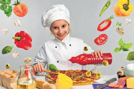
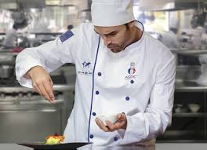

BEST CHEF IN OUR RESTAURANT
1.Chef Ranveer
 Cooking specialist Ranveer is the youngest chef among top 10 chefs in India. He was an official
culinary expert at 25 years old to have ever worked with a five-star in India. At present, he is the senior official
culinary expert at the Novotel Mumbai, Juhu Beach. He supervising the Dosa Factory and Shalimar in Cambridge in
addition to Mantra in Boston.
Cooking specialist Ranveer is the youngest chef among top 10 chefs in India. He was an official
culinary expert at 25 years old to have ever worked with a five-star in India. At present, he is the senior official
culinary expert at the Novotel Mumbai, Juhu Beach. He supervising the Dosa Factory and Shalimar in Cambridge in
addition to Mantra in Boston.
Read More..
2.Chef Anjum Anand

Anand born in Kolkata. she was first keen on music than cooking and worked as a drummer in some rock groups before
starting his culinary profession. She went to a cooking school in Trivandrum and worked day night to get recognition
as top ten chefs in India. She started working as a student with Taj Group. Anand later left the Taj Group to seek
profession degree in Bangkok, wheres he started working at Red, eatery that spent time learning more Indian food.
Read More..
3.Chef Saransh

Saransh is India’s most youthful VIP cooking expert and a big name among best top 10 chefs in India. He is now
working at Roti Rasta aur India which is among India’s huge appeared show. Additionally he has worked for “Moment
Noodle Diaries” as a show on Channel News Asia, Singapore. He will be setting a record and getting a notice in –
Limca Book of Records for being the main Indian culinary specialist to travel 20,000 kms of India by street in 100
days.
Read More..
4.Chef KETTY

Combination of Indian food with International Cuisine is the thing that made Chef Ketty famous among
top best Indian chefs. He has a big name in Indian Food business. With a foundation of North India, Chef Ketty is a
music lover and is familiar with English and five Indian regional languages – Hindi, Punjabi, Bengali, Oriya and
Telugu.
Read More..